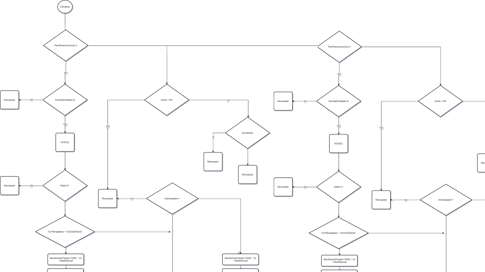
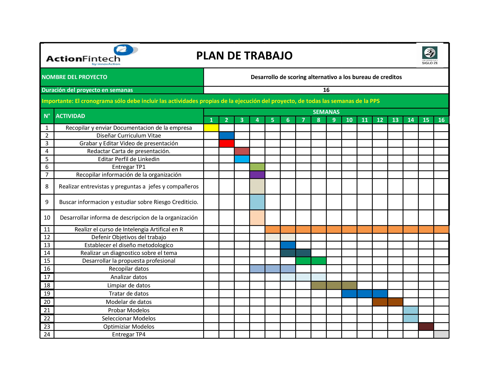

5 DESARROLLO
5.1 Diagnóstico
5.1.1 Situación organizacional actual.
Actión Fintech recibe alrededor de cinco mil solicitudes de prestamos entre sus distintas fintechs pero solo un porcentaje muy bajo pasa las reglas de negocio las cuales deciden si se le otorga o no un credito a un solicitante.
Como se observa el la figura anterior, solo el 12.57 % pasa las reglas para continuar con el proceso para obtener el crédito.
Actualmente para decidir si otorga créditos a un determinado cliente se utiliza un sistema que procesa un diagrama de decisión, en el cual se establecen las reglas a seguir para determinar si una persona es apta para recibir un crédito y en caso de serlo cual es el monto minino y máximo y las cuotas a otorgar.
La información que procesa este algoritmo se obtiene de consultas a los burós de crédito, y ajustando valores del diagrama según cada financiera se define el rango de clientes que puede acceder a un préstamo.
 Diagrama de decisión.
5.1.2 Problematica
La forma de filtrar clientes que utiliza el algoritmo actual en la empresa se basa en criterios de otorgamiento, obtenidos de Nosis (Buró de crédito).
Nosis permite apreciar en un solo informe la situación crediticia del consultado, como: * Información personal. * Compromiso Mensual. * Datos demográficos. * Endeudamiento bancario y calificación * Nivel Socioeconómico (NSE). * Cumplimiento de obligaciones previsionales, fiscales y de riesgos del trabajo. * Actividad crediticia según la cantidad de consultas, entre otros. es decir, ofrece una gran cantidad de información acerca de la personas consultada pero solo tiene un historial de personas que hayan tenido préstamos o en caso de haber tenido prestamos, si los prestamistas lo reportaron al buró de crédito, el resto de la información la obtienen de Banco Central de la República Argentina (BCRA), la Administración Nacional de la Seguridad Social (ANSES), la Administración Federal de Ingresos Públicos (AFIP), la Superintendencia de Riesgos del Trabajo (SRT), la Superintendencia de Servicios de Salud (SSS) y demás organismos. (https://blog.nosis.com/que-es-nosis/)
El algoritmo que procesa las reglas de negocio, al solo utilizar información proveniente de este buró, deja fuera una importante cantidad de potenciales que clientes que podrían ser buenos pagadores. Esta problemática impacta especialmente a los que se encuentran en la base de la pirámide, donde existe un gran mercado que no tiene un historial crediticio y no van a poder tener referencia de si son cumplidores a la hora de hacer los pagos o si ha tenido atrasos o incluso deudas no pagadas.
5.1.3 Fundamento
Hasta el momento Actión fintech al ser una empresa que se está consolidando no había podido tratar esta problemática ya que no tenía a disposición suficientes datos para analizar y obtener modelos de machine learning que permitan definir nuevos segmentos de potenciales clientes.
En base a casos de exito como Moni,en Argentina, y ZOPA,una compañía británica que proporciona un servicio de intercambio monetario en línea, las cuales desarrollaron su propio sistema de evaluación de riesgo y les permitio crecer de forma exponencial,s umado a la alta tasa de clientes que no califican a un prestamo por no poseer un historal crediticio en los buró de credito, y con vistas hacia un futuro donde se puedan incluir a una mayor cantidad de la poblicacion, Horacio Lampe, CEO de la compañia,propuso como objetivo lograr el desarrollo de un modelo de inteligencia artifical que permita calificar si un potencial cliente será moroso o no moroso.
5.2 Propuesta profesional
5.2.1 Objetivo General.
Desarrollar un modelo de Machine Learning que determine si un potencial cliente sera pagador o no pagador.
5.2.2 Objetivos Específicos.
- Obtener datos e información sobre préstamos y clientes de las fuentes de datos de la empresa.
- Comprender los datos y obtener relaciones entre los mismos.
- Realizar una limpieza y corrección de los datos.
- Modelar los datos.
- Seleccionar algoritmos candidatos para el modelo.
- Optimizar los algoritmos candidatos
- Obtener algoritmo para producción.
5.2.3 Límites y alcances:
El proyecto de práctica profesional abarcará desde la búsqueda de información en las fuentes de datos de la empresa hasta la obtención de un modelo optimizado de machine learning.
5.2.4 Recursos
Para llevar a cabo este proyecto se definen algunos recursos indispensables para el desarrollo del mismo:
Recursos Humanos: empleados con conocimiento en analisis de datos y machine learning.
Capacitaciones: capacitación de los empleados, a traves de cursos, mentorias,etc.
Recursos teconlogicos: - Lenguaje R. - Framewrok R studio, para el desarollo y estudio de los algortimos de machine learning. - Lenguaje sql y base de datos SQL-SERVER como fuentes de datos. - Azure para montar la infrestactura en la nube.
Curso de Udemy Machine Learning con R.
5.2.5 Diagrama de Gantt
 Diagrama de Gantt.